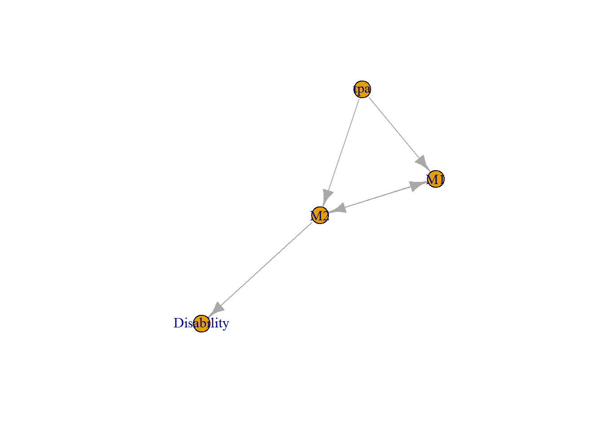

Chapter 10 Graph Theory
Graph based methods are used daily without realisation of their origin. Examples include Google, Facebook social network, and roads. These methods have emerged as tools for interpreting and analysing connected network structures (Fornito 2016). For example, the brain structures and their association with disability can be framed as a network analysis.
Matrix can be used to represent graphical data, relevant for the network analysis. An adjacency matrix represents the adjacency between different nodes. The nodes are represented in rows and colums. A value of one represent that node A is adjancence to node B. This graph is symmetrical as the value is also assigned between B and A. The diagonal of this graph consists of zeros as the relationship between A and A is zero. Direction can be introduced to a graph by representing the direction from A to B as one. In this case, a value of zero is attached from B to A.
A graph consists of vertices (nodes) and edges (links). The edges can have direction in which case it is known as directed graph (digraph). Edge direction indicates flow from a source node to a destination node. The nodes and their directed edges can be represented as an adjacency matrix. A directed graph has an asymmetric adjacency matrix.
##
## Attaching package: 'igraph'## The following objects are masked from 'package:stats':
##
## decompose, spectrum## The following object is masked from 'package:base':
##
## unionaspects<-graph(c("M1","M2","M2","Disability","tpa","M1","M2","M1","tpa","M2"))
plot(aspects) #aspects is the name of the graph
10.1 Special graphs
10.1.1 Laplacian matrix
The Laplacian matrix is the difference between the degree and adjacency matrix. The degree matrix represents the number of direct connection of a node. The diagonal of Laplacian matrix retains the diagonal values of the degree matrix (since the diagonal of the adjacency matrix consists of zeroes). The smallest eigenvalue of the Laplacian describes whether the graph is connected or not. The second eigenvalue of the Laplacian matrix is the algebraic connectivity or Fiedler value. High Fiedler value indicates greater number of connected components and consequently, resilience to breakdown in flow of information between members(Jamakovic and Mieghem 2008) .
10.1.2 Bimodal (bipartite) graph
Bimodal graphs are of interest in social network and in analysis of food ecosystem in nature. A well studied example is the Zachary karate club network.This dataset is included in the igraphdata package.
## Loading required package: network##
## 'network' 1.18.1 (2023-01-24), part of the Statnet Project
## * 'news(package="network")' for changes since last version
## * 'citation("network")' for citation information
## * 'https://statnet.org' for help, support, and other information##
## Attaching package: 'network'## The following objects are masked from 'package:igraph':
##
## %c%, %s%, add.edges, add.vertices, delete.edges, delete.vertices,
## get.edge.attribute, get.edges, get.vertex.attribute, is.bipartite,
## is.directed, list.edge.attributes, list.vertex.attributes,
## set.edge.attribute, set.vertex.attribute## Loading required package: ergm##
## 'ergm' 4.5.0 (2023-05-27), part of the Statnet Project
## * 'news(package="ergm")' for changes since last version
## * 'citation("ergm")' for citation information
## * 'https://statnet.org' for help, support, and other information## 'ergm' 4 is a major update that introduces some backwards-incompatible
## changes. Please type 'news(package="ergm")' for a list of major
## changes.##
## 'latentnet' 2.10.6 (2022-05-11), part of the Statnet Project
## * 'news(package="latentnet")' for changes since last version
## * 'citation("latentnet")' for citation information
## * 'https://statnet.org' for help, support, and other information
## NOTE: BIC calculation prior to latentnet 2.7.0 had a bug in the calculation of the effective number of parameters. See help(summary.ergmm) for details.
## NOTE: Prior to version 2.8.0, handling of fixed effects for directed networks had a bug. See help("ergmm-terms") for details.#davis of social network
data(davis)
davis.fit<-ergmm(davis~bilinear(d=2)+rsociality)
plot(davis.fit,pie=TRUE,rand.eff="sociality",labels=TRUE)
10.2 Centrality Measures
The nodes in this case are variables such as ASPECTS regions, demographic and risk factors. This graph below uses data from a paper on the use of PageRank where a graph of 4 variables were used to illustrate the PageRank method for searching brain regions related to disability (Beare et al. 2015).
#the network data is provided above on ASPECTS regions
#degree is available in igraph, sna
d<-igraph::degree(aspects)
#closeness is available in igraph, sna
cl<-igraph::closeness(aspects)
#betweenness
b<-igraph::betweenness(aspects)
#page rank
p<-page.rank(aspects)
df<-data.frame("degree"=round(d,2),"closeness"=round(cl,2),"betweenness" =round(b,2),"PageRank" =round(p$vector,2))
knitr::kable(df)| degree | closeness | betweenness | PageRank | |
|---|---|---|---|---|
| M1 | 3 | 0.33 | 0 | 0.29 |
| M2 | 4 | 0.50 | 2 | 0.37 |
| Disability | 1 | NaN | 0 | 0.25 |
| tpa | 2 | 0.25 | 0 | 0.09 |
10.2.1 Local centrality measures
Centrality measures assign a measure of importance to nodes and can therefore indicate whether some nodes are more critical than others in a given network. When network nodes represent variables, centrality measures may indicate relevance of variables to a model.
The simplest centrality measure, degree centrality, is the count of links for each node and is a purely local measure of importance. Node strength, used in weighted networks, is the sum of weights of edges entering or leaving (or both) the node. Other measures, such as betweenness centrality, describe more global structure - the degree of participation of a node as conduit of information between other nodes in a network.
10.2.2 Global centrality measures
10.2.2.1 Page Rank
PageRank is one member of a family of graph eigenvector centrality measures, all of which incorporate the idea that the score of a node depends, at least in part, on the scores of neighbors connecting to the node. Thus a page may have a high PageRank score if many pages link to it, or if a few important or authoritative pages link to it.
Others include eigenvector centrality (which works best with undirected graphs), alpha centrality and Katz centrality. PageRank uses a different scaling for connections (by the number of links leaving the node) and importance is based on incoming connections rather than outgoing connections(Brin and Page 1998) . Eigenvector centrality measure a nodes centrality in terms of node parameters and centrality of neighboring nodes.
PageRank has several differences with respect to other eigenvector centrality methods, expanded below, which make it better suited for digraphs. PageRank was originally described in terms of a web user/surfer randomly clicking links, and the PageRank of a web page corresponds to the probability of the random surfer arriving at the page of interest. The model of the random surfer used in the PageRank computation includes a damping factor, which represents the chance of the random surfer becoming bored and selecting a completely different page at random (teleporting to a random page). Similarly, if a page is a sink (i.e.has no outgoing links), then the random web surfer may click on to a random page.
A number of different approaches are available for computing the PageRank for nodes in a network. The conceptually simplest is to assign an equal initial score to each node, and then iteratively update PageRank scores. This is easy to perform algebraically for a small number of nodes but can take a long time with larger data. In practice, it is performed using eigenvector methode. PageRank analysis can be performed using igraph package. (Beare et al. 2015)
Graph based methods have emerged as tools for interpreting and analysing connected network structures and in this case network structures associated with disability.These types of analysis are attractive because they assess the connectedness of each region of interest (ROI) with respect to other ROIs over the entire brain network.Eigenvector centrality methods have been used to explore connectedness of brain regions. PageRank is a variant of eigenvector centrality and is an ideal method for analysis ofdirected graph (the edges between adjacent nodes(regions) have direction). This method was initially developed as the basis of the search engine for Google. PageRank offered a considerable improvement over pure text based methods in ranking search results,and had the advantage of being content independent (i.e.the search is based on links between the web pages). PageRank emphasises web pages based on the number of links directed to a page and the importance of the sources of those links. Thus a small number of links from influential pages can greatly enhance the importance of the destination page.
10.4 Visualising graph
There are many packages for visualising graph such as igraph, sna, ggraph, _Rgraphviz, visnetwork, networkD3.
10.4.1 Visnetwork
library(igraph)
library(RColorBrewer)
library(visNetwork)
edge<- read.csv("./Data-Use/TPA_edge.csv") #3 columns:V1 V2 time
node<-read.csv("./Data-Use/TPA_node.csv")
df<-graph_from_data_frame(d=edge[,c(1,2)],vertices = node,directed=F)
V(df)$type<-V(df)$name %in% edge[,1]
#assign color
vertex.label<-V(df)$membership
# Generate colors based on type:
colrs <- c("gray50", "gold")
V(df)$color <- colrs[V(df)$membership]
#assign shape
shape <- c("circle", "square")
V(df)$shape<-shape[V(df)$membership]
#extract data for visNetwork
data<-toVisNetworkData(df)
visNetwork(nodes=data$nodes,edges=data$edges, main="TPA ECR Network")%>% visNodes(color = list(hover = "red")) %>% visInteraction(hover = TRUE)
10.5 Social Media and Network Analysis
Social media platform such as twitter, youtube, facebook and instagram are rich source of information for graph theory analysis as well as textmining. The following section only covers twitter and youtube as both are accessible to the public. Theres restricted access for facebook and instagram.
10.5.1 Twitter
Analysis of Twitter requires creating an account on Twitter. This step will generate a series of keys listed below. These keys should be stored in a secret location. There are several different ways to access Twitter data. It should be noted that the data covers a range of 9 days and a maximum of 18000 tweets can be downloaded each day. The location of the tweeter can also be accessed if you have created an account with Google Maps API.
10.5.2 Youtube
To perform analysis of comments on Youtube, a Google Developers account should be created. The apikey shoud be saved in a secret location. The analysis can be done by identifying the video of interest.